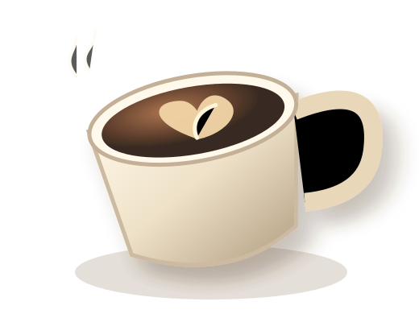

Honey oat latte
Warm, mellow, comforting
A cozy corner, thoughtful coffee and the kind of moments you don't want to rush.
DISCOVER THE MENU ↗
BREWEDConcept brand created by Shyam Studio for portfolio demonstration.
WANT A SITE LIKE THIS? ↗